Prácticas de Enfermería
Lavado de manos quirúrgico
Extracción sanguínea
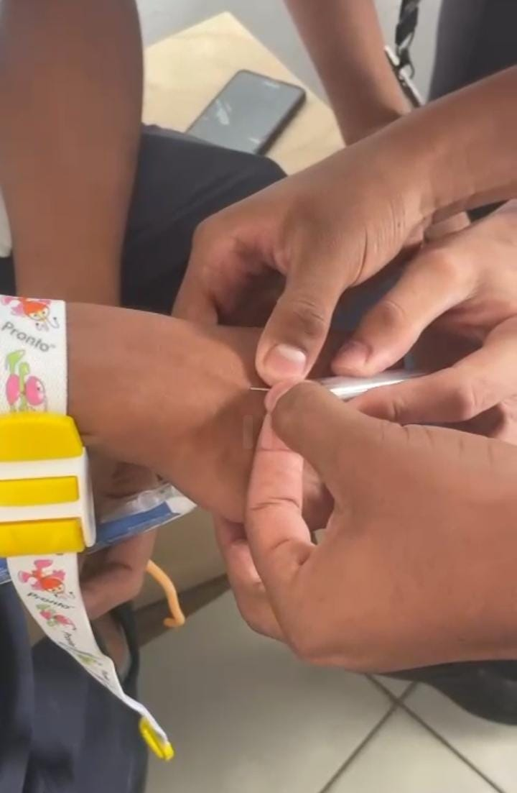 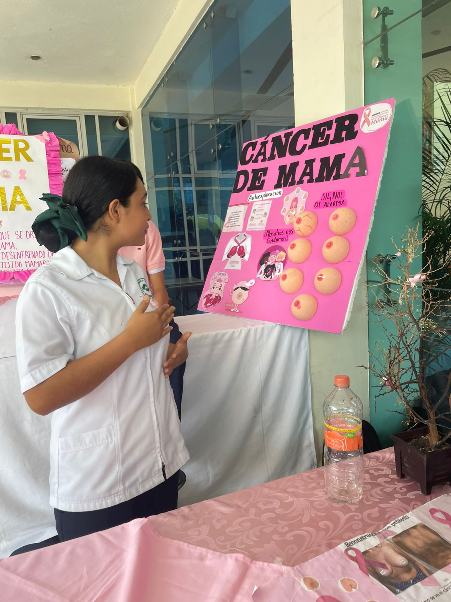 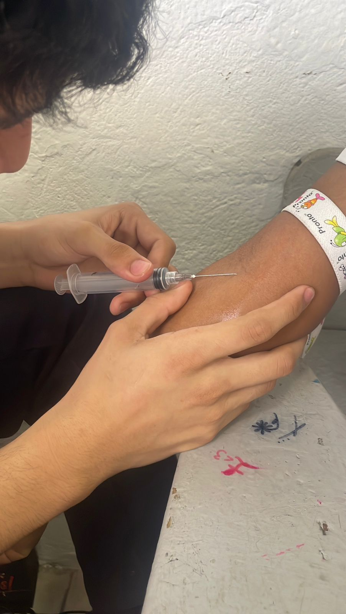 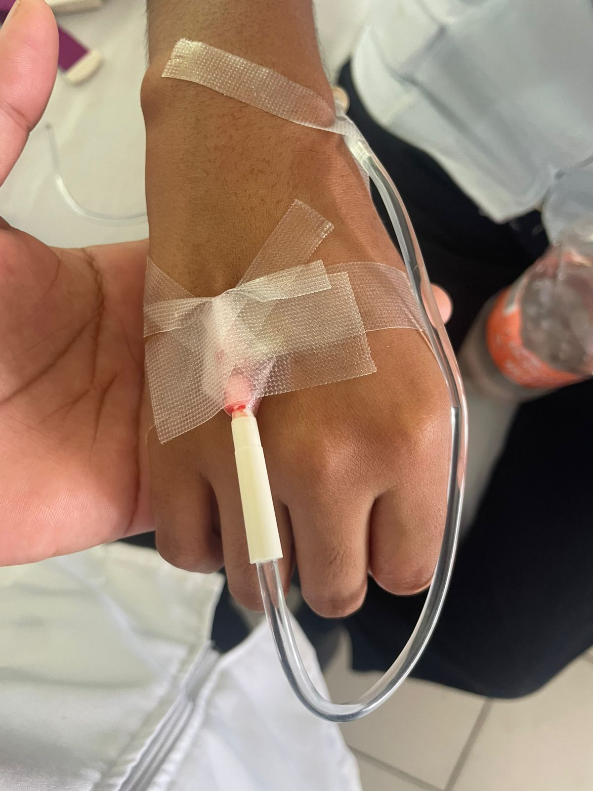
Día Mundial contra la Diabetes
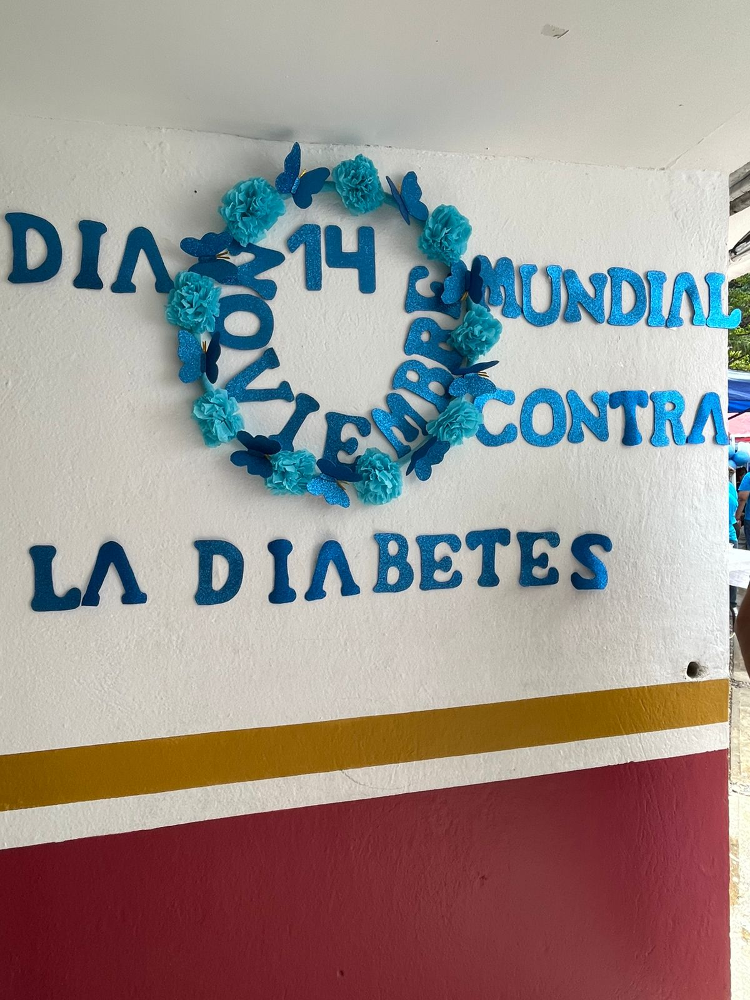 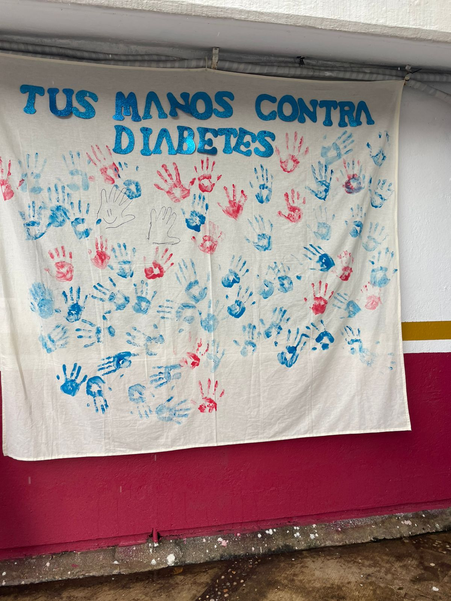 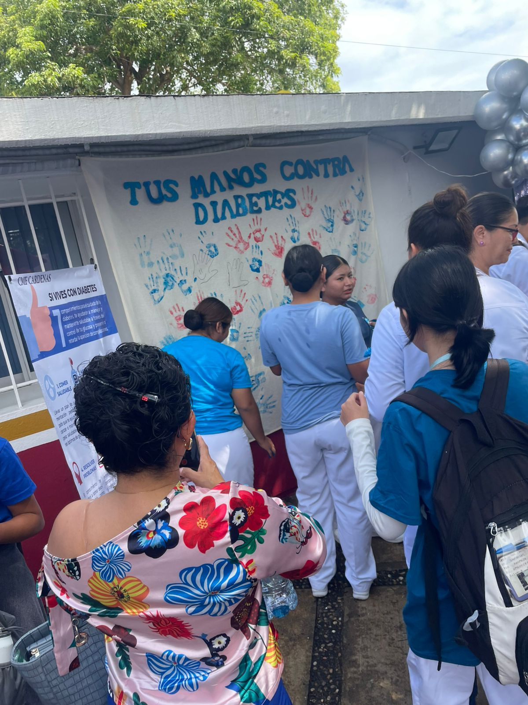
Práctica de venoclisis
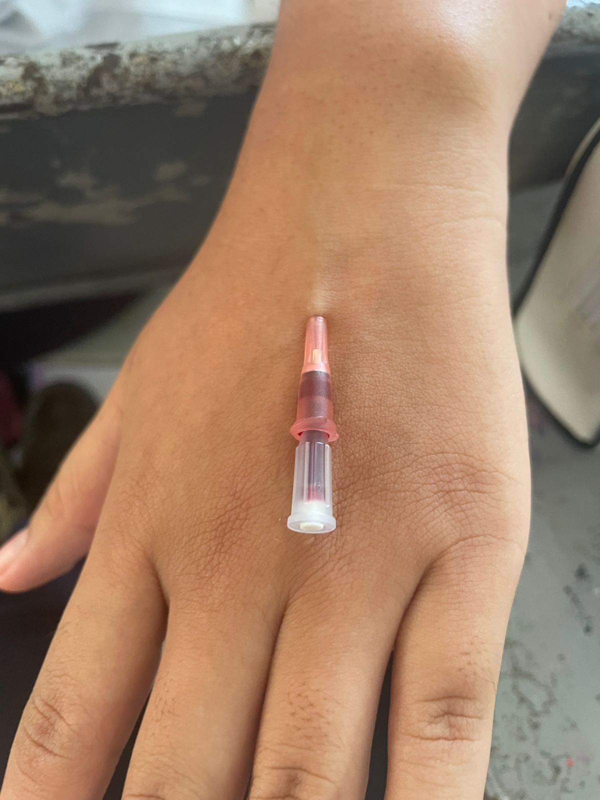
Signos vitales
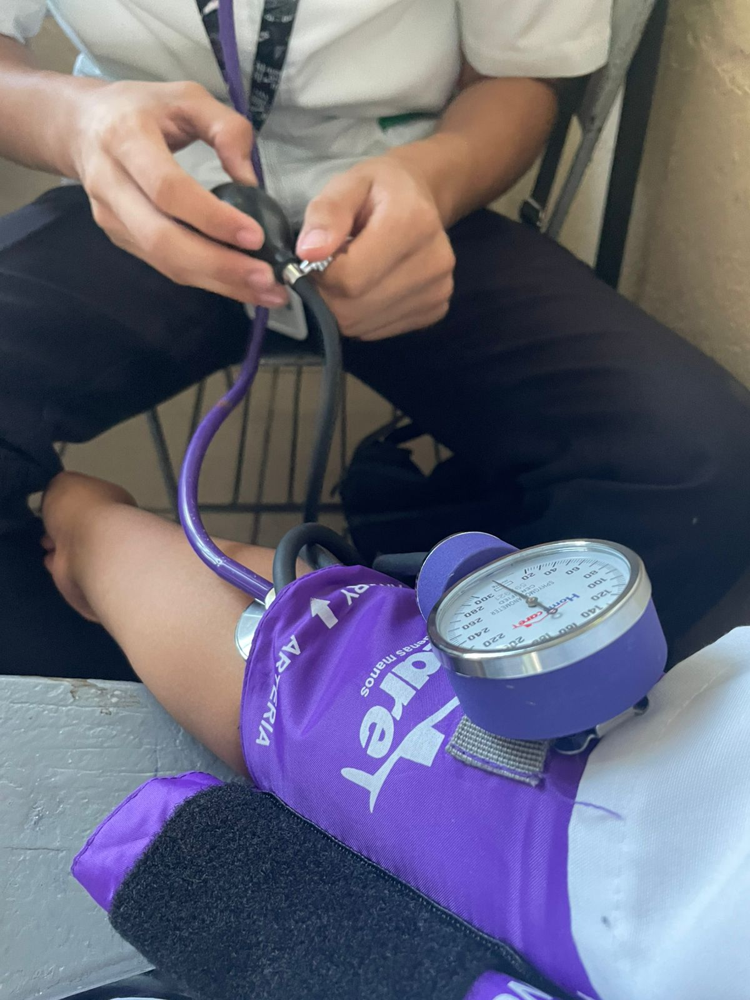 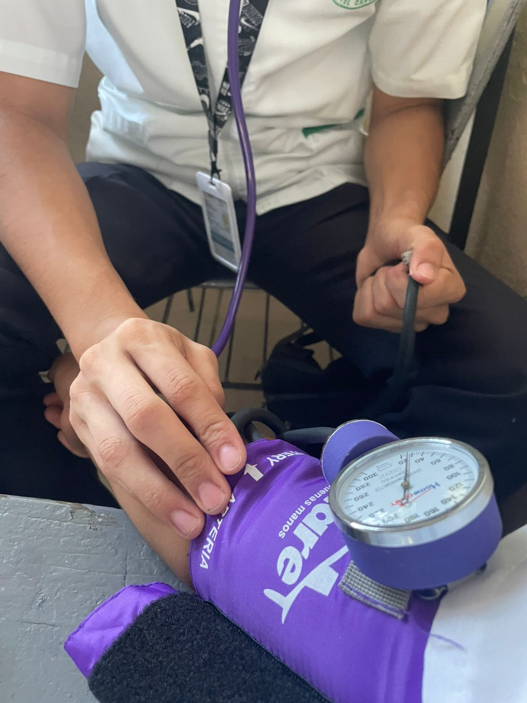
Feria de la salud
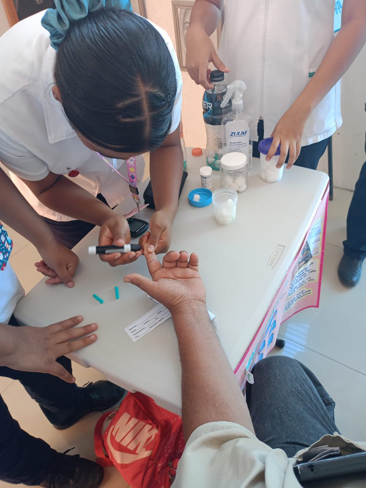
Imposición de símbolos y paso de la luz
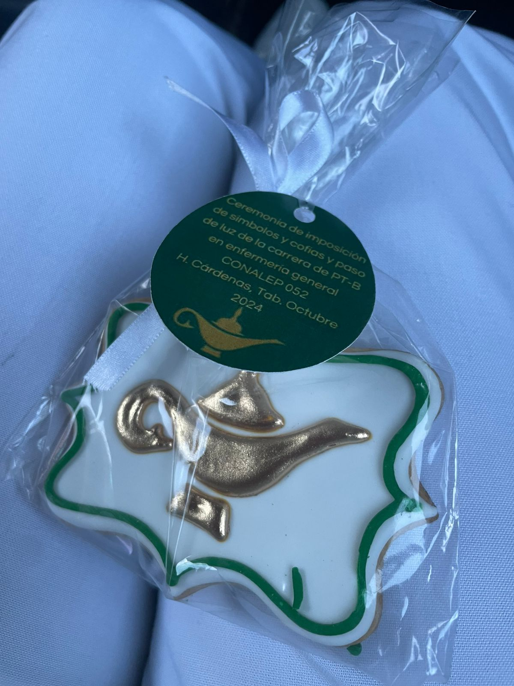
inicio